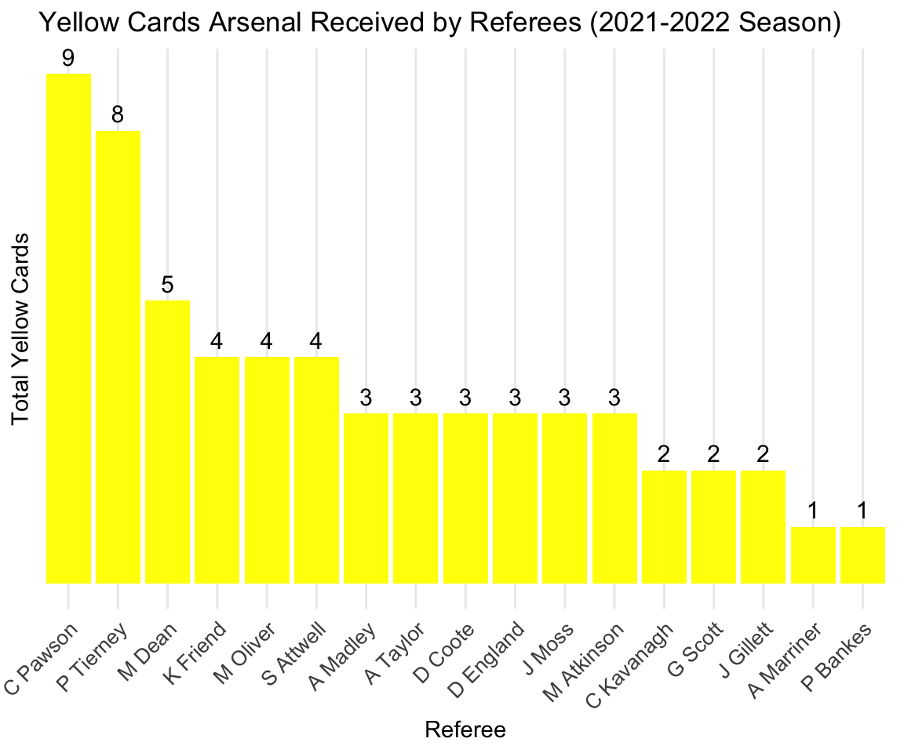

library(tidytuesdayR)
tuesdata <- tidytuesdayR::tt_load('2023-04-04')
tuesdata <- tidytuesdayR::tt_load(2023, week = 14)
soccer <- tuesdata$soccerArsenal in Premier League 2021-2022
Referees in Arsenal’s Fixtures
Referee Decisions for Arsenal in 2021-2022 Season
Objective: Which referees gave out the most yellow cards to Arsenal during the 2021-2022 season?
The dataset includes teams, referee, and stats by home and away side such as fouls, shots, cards, and many more. This dataset was compiled from the official Premier League website for the 2021-2022 season. This data was scrapped by Evan Gower.
Original Data
library(DT)
# Display the first 5 rows of the soccer dataset
datatable(
soccer[1:5, ], # Select the first 5 rows
options = list(
pageLength = 5, # Show 5 rows
scrollX = TRUE, # Enable horizontal scrolling
dom = 't', # Show only the table without search box, etc.
autoWidth = TRUE # Adjust column widths automatically
),
caption = "First 5 Rows of the Soccer Dataset"
)The above sample table shows the first five rows of the original dataset. Each row represents a unique matchday for a given team. Descriptions of some key variables are the following:
- FTHG: full time home team goals
- FTAG: full time away team goals
- FTR: results showing which team won
- Half-time results are denoted by HTHG, HTAG, HTR
- HS: Number of shots taken by the home team
- AS: Number of shots taken by the away team
- HST: Number of shots on target by the home team
- AST: Number of shots on target by the away team
- HF: Number of fouls by the home team
- AF: Number of fouls by the away team
- HC: Number of corners taken by the home team
- AC: Number of corners taken by the away team
- HY: Number of yellow cards received by the home team
- AY: Number of yellow cards received by the away team
- HR: Number of red cards received by the home team
- AR: Number of red cards received by the away team
Refereeing decisions play huge outcome in a football match. In fact, fans and analysts alike do pay enormous attention to the designated referee for each fixture. As a lifelong Arsenal fan, I wanted to find out which referees tend to be harsher on Arsenal. More specifically, we focus on yellow cards. While a red card means that a player is ejected from the match, these instances tend to be more clear-cut decisions. Yellow card decisions offer a better insight into the deeper nuances of refereeing decisions or potential biases toward/against teams since yellow cards are given to less aggressive actions.
library(tidyverse)
# Creating a comprehensive table for Disciplinary actions data
arsenal_yellow_by_referee <- soccer |>
filter(HomeTeam == "Arsenal" | AwayTeam == "Arsenal") |>
group_by(Referee) |>
summarise(
Home_Yellow_Cards = sum(HY[HomeTeam == "Arsenal"], na.rm = TRUE),
Away_Yellow_Cards = sum(AY[AwayTeam == "Arsenal"], na.rm = TRUE),
Total_Yellow_Cards = Home_Yellow_Cards + Away_Yellow_Cards
) |>
arrange(desc(Total_Yellow_Cards))1. Which referees handed out the most yellow cards?
library(ggplot2)
# Bar char to represent yellow cards by referees
ggplot(arsenal_yellow_by_referee, aes(x = reorder(Referee, -Total_Yellow_Cards), y = Total_Yellow_Cards)) +
geom_bar(stat = "identity", fill = "yellow") +
geom_text(aes(label = Total_Yellow_Cards), vjust = -0.5, size = 4) +
labs(title = "Yellow Cards Arsenal Received by Referees (2021-2022 Season)",
x = "Referee",
y = "Total Yellow Cards") +
scale_y_continuous(breaks = NULL) +
theme_minimal() +
theme(
axis.text.x = element_text(angle = 45, hjust = 1, size = 10),
axis.text.y = element_blank(),
axis.ticks.y = element_blank(),
panel.grid.major.y = element_blank(),
panel.grid.minor.y = element_blank()
)
The bar chart represents the total number of yellow cards each referee has given to Arsenal. Craig Pawson handed out the most yellow cards to Arsenal, with 9 cards given.
2. Did Arsenal receive more yellow cards at home or away?
library(ggplot2)
# Summarize total yellow cards at home and away
yellow_cards_summary <- arsenal_yellow_by_referee %>%
summarise(
Home = sum(Home_Yellow_Cards),
Away = sum(Away_Yellow_Cards)
) |>
pivot_longer(cols = everything(), names_to = "Location", values_to = "Total_Yellow_Cards")
ggplot(yellow_cards_summary, aes(x = Location, y = Total_Yellow_Cards, fill = Location)) +
geom_bar(stat = "identity", width = 0.6) +
geom_text(aes(label = Total_Yellow_Cards), vjust = -0.2, size = 5) +
labs(
title = "Yellow Cards Arsenal Received by Location",
x = "Location",
y = "Total Yellow Cards"
) +
theme_minimal() +
theme(
plot.margin = margin(10, 10, 20, 10),
text = element_text(size = 14),
legend.position = "none"
) +
ylim(0, max(yellow_cards_summary$Total_Yellow_Cards) + 5)This study offers insight into if Arsenal experienced home advantage in referee decisions. Many fans assume that referees tend to be more lenient toward home teams. This may manifest the most in referee decisions for making disciplinary actions. The bar chart shows the number of yellow cards Arsenal received depending on match venue.
Interestingly, Arsenal received 29 yellow cards at away matches and 31 in home matches. This goes against common logic. Although not conclusive, home advantage did not work in Arsenal’s favor.